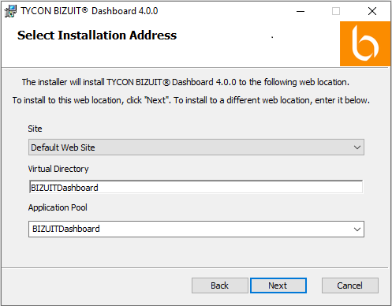
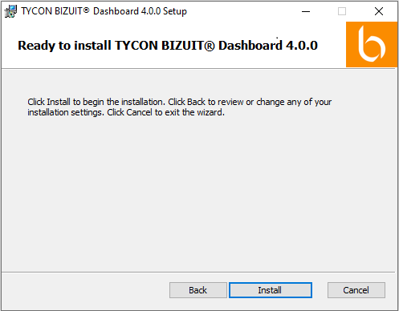
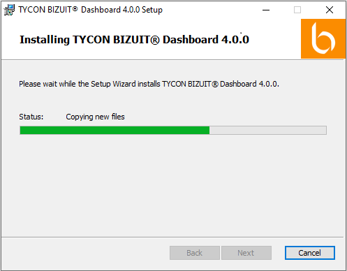

Seleccione el Sitio Web y Directorio Virtual donde se instalará BIZUIT Dashboard Server así como el Pool de Aplicaciones que utilizará:

Notas:
- En caso de estar realizando la instalación sobre un servidor en el cual ya se encuentra instalada una versión anterior de BIZUIT Dashboard, tenga en cuenta que puede ser necesario cambiar el nombre del directorio virtual propuesto para evitar sobre-escribir la instalación anterior.
- De manera automática, el instalador creará adicionalmente dos Application Pools: [ApplicationPool]AD y [ApplicationPool]API (por defecto BIZUITDashboardAD y BIZUITDashboardAPI) junto con los directorios virtuales [VirtualDirectory]API y ActiveDirectory. El primero es utilizado hostear la API de BIZUIT, y el segundo para la utilización de seguridad integrada con Windows.
Presione el botón Next y se presentará la siguiente ventana de confirmación:

Presione el botón “Install” y el programa de instalación dará comienzo mostrando el avance de la operación en la siguiente ventana:

Nota: Este paso puede demorar unos minutos. No cancele el proceso ni apague su computadora
Anterior / Siguiente